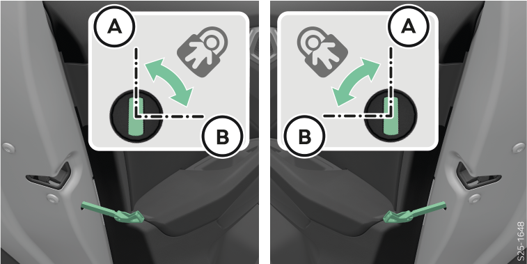

La sécurité enfants empêche d’ouvrir les portières arrière de l’intérieur.
Contrôle parental avec commande électrique

Tourner la sécurité avec la clé du véhicule ou un tournevis à tête plate.
A Sécurité désactivée
B Sécurité activée